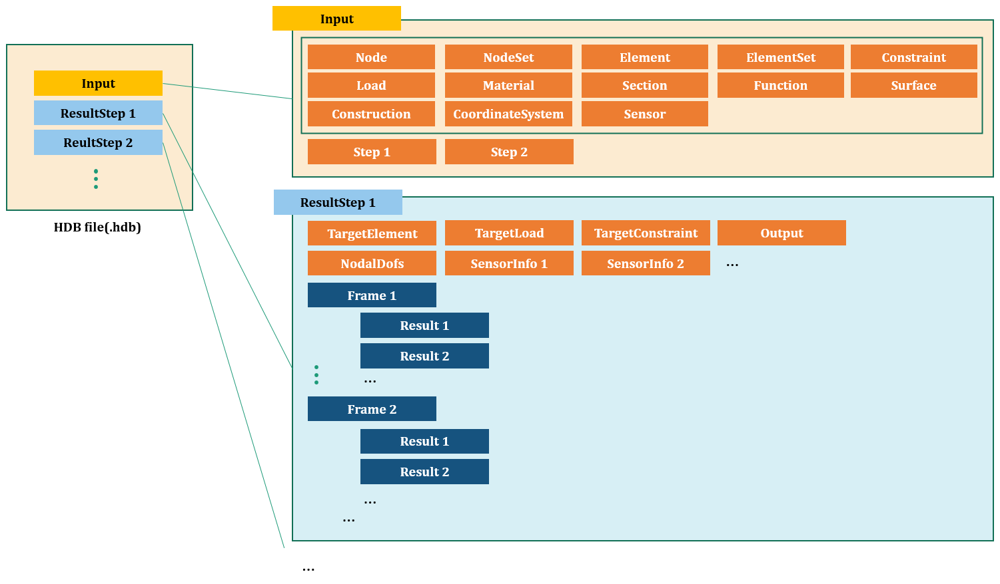

18. HDB 파일 구조
개요
HDB 파일(.hdb)은 hfVisualizer에서 사용되는 파일로 모델 입력 부분과 해석결과값을 담고 있다. 파일 포맷은 텍스트, 바이너리, HDF5 파일로 제공된다.
- 텍스트 : 테스트 용도이다. 간단한 모델에서 유효하다(
.text.hdb) - 바이너리 : 자체 형식을 갖는 바이너리 파일이다(
.bin.hdb) - HDF5 : HDF5 형식으로 저장한다(
.h5.hdb)
HDB 파일은 “모델” + “해석단계”로 구분되는 해석용 입력 파일(.inp) 구조와 동일하지만, “해석단계”에서 해석 결과를 시간에 따라 저장한다는 점에서 차별성이 있다.

Fig. 18.1-1. HDB file structure
HDB 파일에서 해석 단계별 결과는 *ResultStep이라는 하위 명령에 저장된다. *ResultStep은 해석용 입력파일의 *Step에 대응되며, 각각의 해석 결과를 저장하고 있다. *Target, *FieldOutputs, *Frame, *Result 등의 부명령어가 있다.
Example
...
*ResultStep, Name=step1
*TargetElements
step1Elset
*TargetConstraints
support
*TargetLaods
load-DC
*Output
D, SF, sensor1
*NodalDofs
1002001, X|Y|Z|RX|RY|RZ # nodeId, dofs
1002002, X|Y|Z
...
*SensorInfo, Sensor=sensor1
1, 1011023 # sensorPointId, elementId
...
*Frame,STime=0,RTime=0,LF=0
*Result, Field=D
1002001, 0, 0, 0, 0, 0, 0 # nodeId, v1, v2, ...
1002002, 0, 0, 0
...
*Result, Field=SF
1 0. 0. 0. 0. 0. 0. # elementId, v1, v2, ...
2 0. 10. 1. 0. 1. 0.
...
*Result, Field=sensor1
1, 0, 0, 0, 0 # pointId, dx, dy, dz, value
...
*Frame,STime=0.1,RTime=0,LF=0
*Result, Field=D
1002001, 1, 0, 1, 0, 0, 0
1002002, 0, 2, 1
...
*Result, Field=SF
1 0. 0. 0. 0. 0. 0.
2 0. 10. 1. 0. 1. 0.
...
*Result, Field=sensor1
1, 0.001, 0, 0, 1.2 # pointId, dx, dy, dz, value
...
*ResultStep, Name=step2
...
*ResultStep, Name=step3
...
*Step 명령으로 해석단계를 정의하며, *TargetElements, *TargetConstraints, *TargetLoads, *Output, *NodalDofs, *Frame, *Result` 등의 부명령어가 있다.
*ResultStep
ResultStep을 정의한다.
*ResultStep Name=name
Keyword line
- name : 이름
*TargetElements
ResultStep의 대상이 되는 요소를 지정한다. 이때 요소는 해석에 사용된 요소을 의미하는 것은 아니며, 출력의 대상을 지칭한다.
*TargetElements
elset1, elset2, ...
First dataline
- elset1, elset2, ...: 대상 요소집합
*TargetConstraints
ResultStep의 대상이 되는 구속조건을 지정한다. 이때 구속조건은 해석에 사용된 구속조건을 의미하는 것은 아니며, 출력의 대상을 지칭한다.
*TargetConstraints
constraint1, constraint2, ...
First dataline
- constraint1, constraint2, ...: 대상 구속조건
*TargetLoads
ResultStep의 대상이 되는 하중을 지정한다.
*TargetLoads
load1, load2, ...
First dataline
- load1, load2, ... : 대상 하중
*Output
출력되는 결과값이 무었인지 알린다.
*Output
field|sensorName,...
...
First dataline and subsequent datalines
- field, ... : Name of field
- sensorName: 출력한 센서 명칭
*Step 하위의 *Output과 동일하다. 다만 field는 SF.3, S.11, S.Mises 등과 같은 seconary field를 지정하는 것을 지원한다.
*NodalDofs
사용된 절점의 자유도 패턴을 출력한다.
*NodalDofs
id, dofs
...
First dataline and subsequent datalines
- id, dofs: 절점 번호와 그 절점의 자유도 패턴
*Output에서 D, V, A 등과 같이 절점 필드를 요청한 경우에만 제공된다. D.X 등과 같이 절점 필드라 하드라도 스칼라를 요청한 경우에는 제공되지 않는다.
*Frame
ResultStep의 프레임을 정의한다.
*Frame, STime=stime, RTime=rtime, LF=lf
*Result, ...
...
*Result, ...
...
Keyword line
- stime: 스텝 시간(step time)
- rtime: 실제 시간(real time)
- lf: 하중계수(load factor)
주파수 해석에서는 stime이 고유진동수이다. 하위 명령으로 *Result이 존재한다.
*Result
Frame내의 해석결과를 출력한다.
*Result, Name=name
id,...
...
Keyword line
- name : 필드 명칭 또는 센서 명칭
First dataline and subsequent datalines for nodal or elemental field
- id, .... : 절점 또는 요소 번호와 관련된 필드 값.
First dataline and subsequent datalines for sensor
- sensorPointId, dispX, dispY, dispZ, sensorValue: 센서 포인트 아이디와 그 점에서 발생한 변위와 센서값.